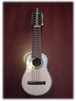
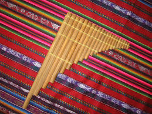
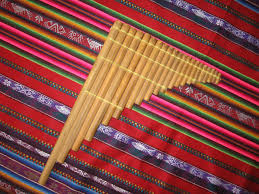

La Música de Perú
En Perú hay una amplia variedad de música. Entre ellos:
- Música Criolla
- Vals Peruano
- Hip-Hop Peruano
- Cumbia
- Chicha
Además de tener esta diversidad muscial, el Perú se destaca por los instrumentos musicales típicos del país.
| Nombre de Instrumento | Tipo de Instrumento |
|---|---|
| Charango | Cuerda |
| Guitarra Típica | Cuerda |
| Chillador | Cuerda |
| Cajón | Percusión |
| Huancar | Percusión |
| Tinya | Percusión |
| Antara | Viento |
| Quena | Viento |
Muchos de estos instrumentos son legados de las culturas indígenas de Perú. Otros de estos intrumentos son creados a base de la influencia de la música española durante y luego de la conquista. Además de ser influenciada por música española y tradicional indígena, tiene ritmos Africanos, legados de los esclavos que los españoles trajeron a América.
 

La danza en Perú está influenciada mayormento por bailes europeos como el flamenco y todas sus variaciones. El baile del Huayno fue originado por la cultura Inca en Perú, y todavía se practica. La Diablada es una mezcla entre danza indígena y cristiana, donde se representan las fuerzas del bien y el mal en el baile. Otro baile muy popular en Perú es la Marinera, que es usado principalmente para que los hombres puedan cortejar a las mujeres en las fiestas. La Marinera, al igual que muchos de los bailes peruanos, tiene muchas variaciones de acuerdo a la región en que se practique.

Dato Curioso:
La palabra Inca para el canto es "taki". Además de significar "canto", también significa "baile", ya que ambas actividades se relacionaban.